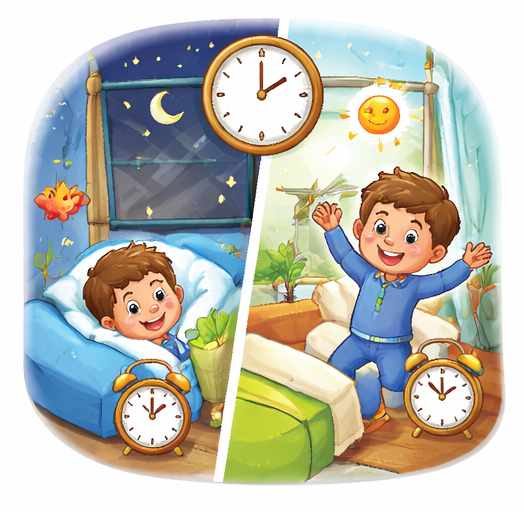

جلدی سونا اور جلدی جاگنا زندگی کو ترتیب دیتا ہے: برکت والی زندگی کا راز

زندگی کا ہر لمحہ ایک نعمت ہے، لیکن اس نعمت کی قدر وہی جانتا ہے جو اپنے وقت کو نظم و ضبط کے ساتھ گزارتا ہے۔ "جلدی سونا اور جلدی جاگنا زندگی کو ترتیب دیتا ہے"—یہ فقرہ صرف سائنسی طور پر درست نہیں، بلکہ اسلامی تعلیمات کا ایک اہم حصہ بھی ہے۔ رسول اللہ ﷺ نے صبح کے وقت میں امت کے لیے برکت کی دعا فرمائی ہے۔ جو شخص عشاء کے فوراً بعد سونے کو اپنی عادت بنا لیتا ہے، وہ قدرت کے اس نظام کے ساتھ جڑ جاتا ہے جو اس کی جسمانی اور روحانی توانائی کو محفوظ رکھتا ہے۔ اچھی عادتیں ہی وہ بنیاد ہیں جن پر ایک کامیاب شخصیت کا کردار تعمیر ہوتا ہے۔
1. بیالوجیکل کلاک اور اسلامی طرزِ زندگی
انسان کے دماغ میں ایک قدرتی نظام ہوتا ہے جو اسے سونے اور جاگنے کے لیے تیار کرتا ہے۔ جب ہم رات گئے تک جاگتے ہیں، تو ہم اس نظام کی مخالفت کر رہے ہوتے ہیں جس کے نتیجے میں سستی اور چڑچڑاپن پیدا ہوتا ہے۔ اسلام ہمیں سکھاتا ہے کہ وقت کو سنبھالنا ہی زندگی میں توازن پیدا کرتا ہے۔ فجر کے وقت جاگنا دراصل کامیابی کی طرف پہلا قدم ہے۔ جب آپ کی صبح دن کا آغاز برکت سے ہوتا ہے، تو پورا دن آپ کے کنٹرول میں رہتا ہے۔
بچوں کے معاملے میں یہ روٹین اور بھی اہم ہو جاتی ہے۔ ایک بچہ جو جلدی سوتا ہے، اس کا دماغ تیزی سے کام کرتا ہے اور اسے قرآنی کامیابی حاصل کرنے میں آسانی ہوتی ہے۔ روزانہ تلاوتِ قرآن کے لیے صبح کے وقت سے بہتر کوئی وقت نہیں ہو سکتا جب ہوائیں تازہ ہوں اور ذہن ہر قسم کی دنیاوی فکر سے آزاد ہو کر اللہ کے کلام پر غور کر سکے۔

2. بچوں کی تعلیم اور نیند کا گہرا رشتہ
بچوں کے حافظے کی مضبوطی کا براہ راست تعلق ان کی نیند سے ہے۔ حفظ کرنے کے فوائد تبھی نمایاں ہوتے ہیں جب بچہ ذہنی طور پر پرسکون ہو۔ والدین کی یہ ذمہ داری ہے کہ وہ بچوں کی اسلامی تربیت کے دوران نیند کی پابندی کو اولیت دیں۔ سیکھنے کی بہترین عمر میں اگر ان کی عادات درست بن جائیں تو وہ پوری زندگی ایک منظم انسان بن کر گزار سکتے ہیں۔ اس نظم و ضبط کے ذریعے وہ تجوید کی ضرورت اور باریکیوں کو بھی بہتر سمجھ سکتے ہیں۔
سعید قرآن اکیڈمی: ترتیب یافتہ زندگی کا ساتھی
ہم سعید قرآن اکیڈمی میں اپنے طلباء کو صرف سبق نہیں پڑھاتے بلکہ انہیں آن لائن سیکھنے کے فوائد کا استعمال کرتے ہوئے ایک نظم و ضبط والا ماحول فراہم کرتے ہیں۔ اگر آپ چاہتے ہیں کہ آپ کا بچہ اپنی صبح کا آغاز اللہ کے نام سے کرے اور اس کی زندگی میں ترتیب پیدا ہو، تو سعید قرآن اکیڈمی کی کلاسز ان کے لیے بہترین راستہ ہیں۔ ہم ان کی روٹین کو مدنظر رکھ کر بہترین وقت پر تعلیم فراہم کرتے ہیں۔

یاد رکھیں، جب آپ اپنے آپ کو صبر اور دعا کے ذریعے صبح جلدی جاگنے کا عادی بنا لیتے ہیں، تو آپ کی زندگی سے الجھنیں ختم ہونے لگتی ہیں۔ قرآن کی اصل اہمیت کو سمجھنے کے لیے آپ کا بیدار اور تروتازہ ہونا ضروری ہے۔
اختتام: ایک نیا آغاز کریں
اگر آپ کی زندگی منتشر ہے اور کام پورے نہیں ہو رہے، تو آج ہی اپنی نیند کے نظام کو بدل کر دیکھیں۔ جلدی سونا اور جلدی جاگنا زندگی کو ترتیب دیتا ہے۔ یہ اللہ کی طرف سے دیا گیا وہی راستہ ہے جس پر چل کر انسان دنیا اور آخرت کی حقیقی منزلیں طے کر سکتا ہے۔
بامقصد زندگی کی طرف ایک قدم!
سعید قرآن اکیڈمی کے ساتھ اپنے بچے کے تعلیمی سفر کو منظم بنائیں۔ ابھی فری ٹرائل کلاس کے لیے رابطہ کریں۔